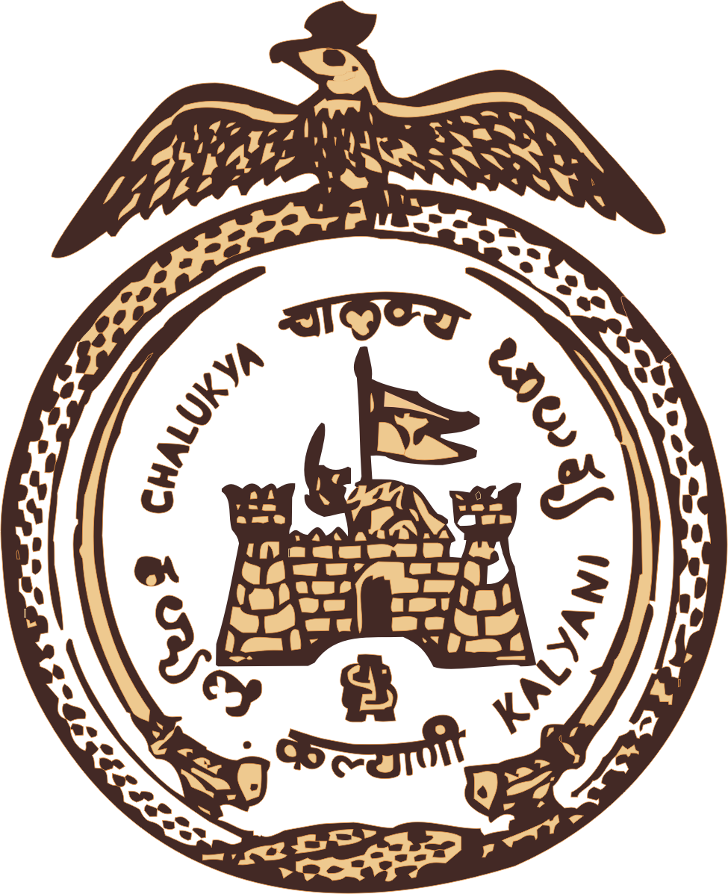

Overview
The content on this website has been translated from the archives written in Modi script. These archives are a rich historical document chronicling the legacy of the Chalukya dynasty, particularly the Kalyani branch, along with their socio-political, cultural, and military engagements. These archives traces the historical lineage, royal decrees, land grants, family trees, wars, and religious activities of the Chalukya dynasty, specifically focusing on the Kalyani (South Indian) branch from roughly 143 AD through the 17th century. .The archives has been with the family since long time. A government approved translator helped in translating these in Marathi and English.
Key Themes & Highlights
1. Origins and Establishment
Vijayaditya is credited as the founder who established rule after alliances and battles with the Pallavas. His descendants like Pulakeshin II and Vikramaditya I & II expanded the empire through conquest and diplomacy.
2. Cultural Contributions
Significant support was given to temples, scholars, and ascetics. The dynasty had deep religious associations, with rulers often renouncing worldly life later.
3. Political Relations and Warfare
Detailed correspondence with various dynasties including Pallavas, Rashtrakutas, Mughals, Adilshahs, and Vijayanagara Empire. Frequent battles and shifting alliances highlight the complex geopolitics of South India. They played roles in resisting Muslim invasions and preserving regional autonomy.
4. Land Grants and Charters
Dozens of sanads (decrees) and land grants were issued to monks, villages, and temples. Records also include inheritance disputes, documentation of lost territories, and royal confirmations.
5. Colonial and European Interactions
References to Portuguese (Firangis) interactions, especially in Goa and coastal Konkan, with mentions of shifting allegiances, diplomacy, and military tensions. Firangis used both coercion and treaties to gradually undermine Chalukya influence.
6. Family Tree and Genealogy
The document meticulously records dynastic succession, marriages (including with Shilahar, Rashtrakuta, and Maurya royal families), and family branches. It also captures hereditary claims and royal obligations through generations.
Notable Personalities
Shivaji Maharaj and Rajaram Chhatrapati are mentioned in connection with letters and political instructions. Ayyandev, a ruler who became an ascetic, symbolizes the dynasty's spiritual inclination. Tukoji, Sabaji, Vikramaditya, and Kondiba Deva are repeatedly mentioned for their administrative or military significance.
Geographic Focus
Kalyani (modern Basavakalyan), Vatapi (Badami), Goa, Konkan coast, Sangameshwar, and Dharwad regions are central. Some correspondence also involves northern kingdoms, Iran, and Portugal.